Lecture 7-8 Real-time Global Illumination （3D GI）
Introduction
GI is complex
- Ray tracing …
- Hack方法：Blinn-Phong——统一大小的Ambient项
in RTR：直接光照 + 一次间接光照
一次间接光照：Q点接收到直接光照后，作为次级光源照射P点的结果 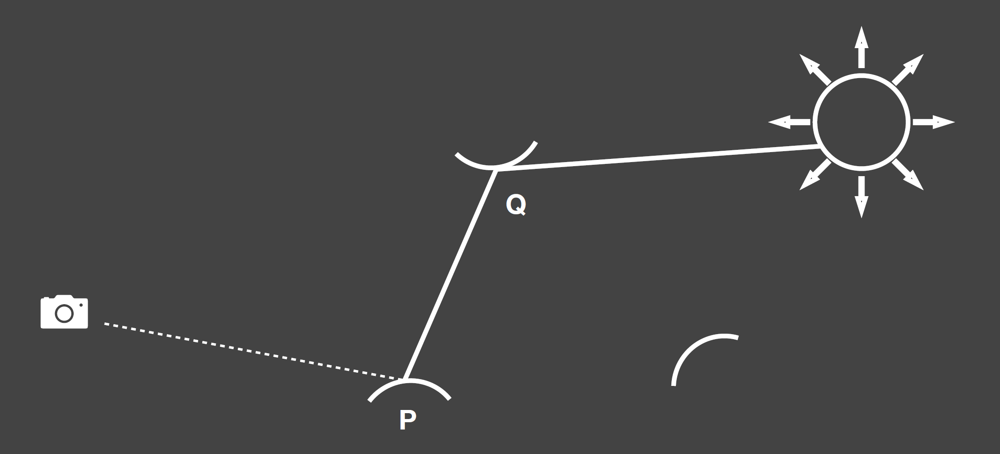
核心问题：
要计算间接光照需要知道
- 被直接光照照亮的表面有哪些？ / 哪些是次级光源？
- 借助Shadow Map
- 每一个次级光源的“贡献”是多少？
- 求和
- 每一个次级光源作为一个Area Light
Reflective Shadow Maps (RSM)
- 获得光源的Shadow Map，存储光源“可见”的深度/世界坐标/法线/Flux等（即Reflective Shadow Maps），视作多个多个点次级光源，eg. Reflective Shadow Maps为512*512，则有512*512个点光源。
- 次级光源的反射方向未知——假定次级光源物体材质均为Diffuse。（不假设接收物为Diffuse）
Recall 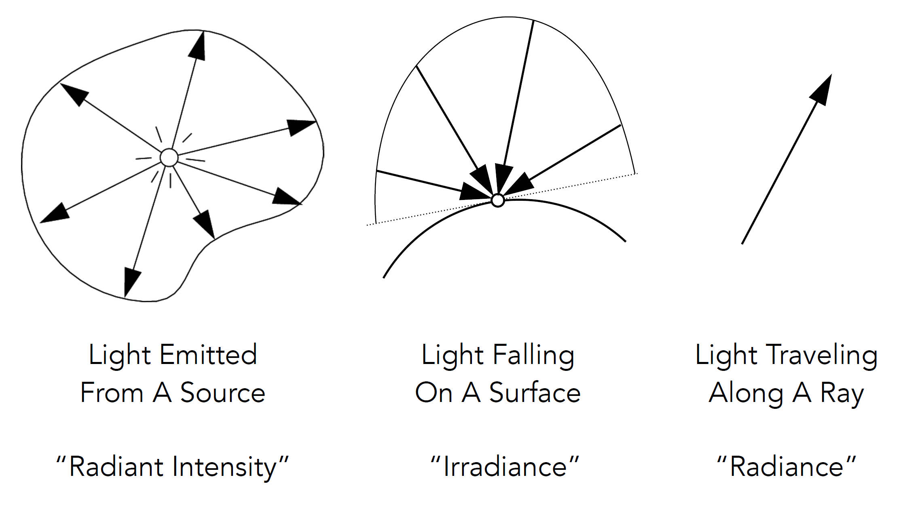
一个Patch（Reflective Shadow Maps的一个像素）的“贡献
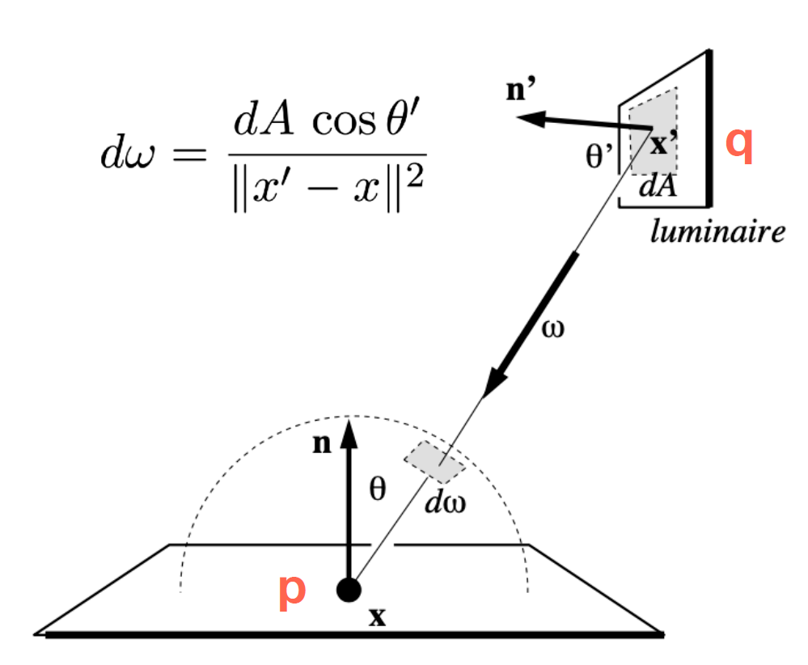 \[ \begin{array}{l}\begin{aligned}L_o(\mathrm p,\omega_0)&=\int_{\Omega_\mathrm{patch}}L_i(\mathrm p,\omega_i)V(\mathrm p,\omega_i)f_r(\mathrm p,\omega_i,\omega_0)\cos\theta_i\,\mathrm d \omega_i\\ &=\int_{A_\mathrm{patch}}L_i(\mathrm q\rightarrow \mathrm p)V(\mathrm p,\omega_i)f_r(\mathrm p,\mathrm q\rightarrow \mathrm p,\omega_0)\dfrac{\cos\theta_p\cos\theta_q}{\|q-p\|^2}\,\mathrm d A \end{aligned}\\\\ f_r=\dfrac{\rho}{\pi}\\ L_i=f_r\cdot\dfrac{\Phi}{\mathrm d A}\quad(\Phi\ \text{is the incident flux / energy}) \end{array} \] 故对每个Reflective Shadow Maps的像素只需存储其 \(\Phi\) ， \(\mathrm d A\) 在积分中被约掉； 由于计算复杂、忽略次级光源的Visibility项。 则有：（原论文中为 \(P\rightarrow Q\) ，故论文中原式为下式中 \(q\) 换成 \(p\) ） \[ E_q(x,n)=\Phi_q\dfrac{\max\{0,\langle n_q|x-x_q\rangle \}\max\{0,\langle n|x_q-x\rangle \}}{\|x-x_q\|^4} \]
Reflective Shadow Maps中不是每一个像素都可以作为次级光源有“贡献”：
- Visibility 遮挡，但该项计算复杂，影响不大，故忽略
- Orientation 方向，例如下图 \(x_{-1}\) 对 \(x\) 无光照 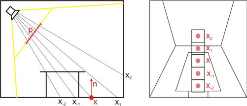
- Distance 距离 -> 减少计算量的方法 ↓
假设：以Reflective Shadow Maps上的距离近似世界坐标的距离 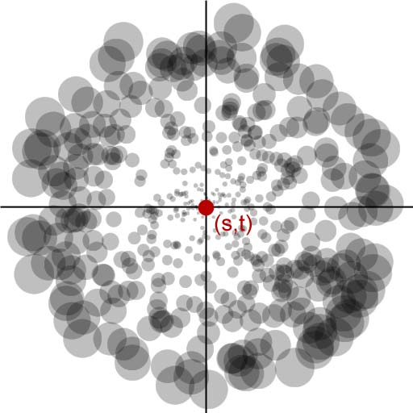
- 参考PCSS，降低Shadow Map作为次级光源的采样
- 对一个Shadow Map，约400个采样
优势：易于实现 问题：性能开销与直接光源数量成正比 / 间接光照不考虑可见性（不真实） / 大量假设 / 采样率和质量的权衡
非常类似离线渲染中的VPL(Virtual Point Light)方法
Light Propagation Volumes (LPV)
关键问题：着色点收到所有方向的间接光照 关键想法：Radiance沿直线传播，且在空间中传播时不会变化 解决思路：用体素传播Radiance
步骤：
获取次级光源
- 利用RSM，采样以减少数量
将次级光源的Radiance“注入”到空间网格/体素中
- 预分割三维网格（eg. 3D texture）
- 对每个网格，找到接近的次级光源
- 求次级光源接收的直接光照Radiance分布和（空间分布）
- 用二阶SH函数（4个数值）压缩Radiance空间分布（近似） 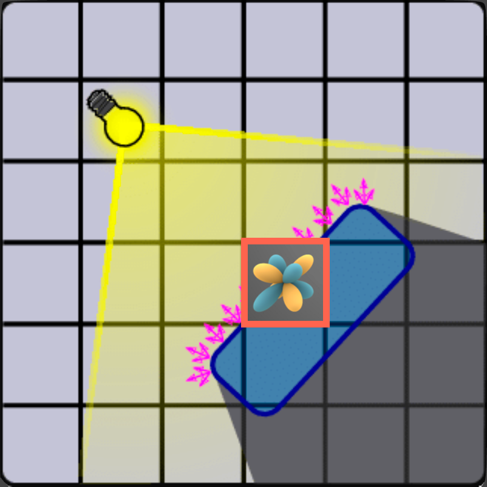
在网格中传播Radiance
- 空间上向周围6个面传播，周边网格也用二阶SH表示 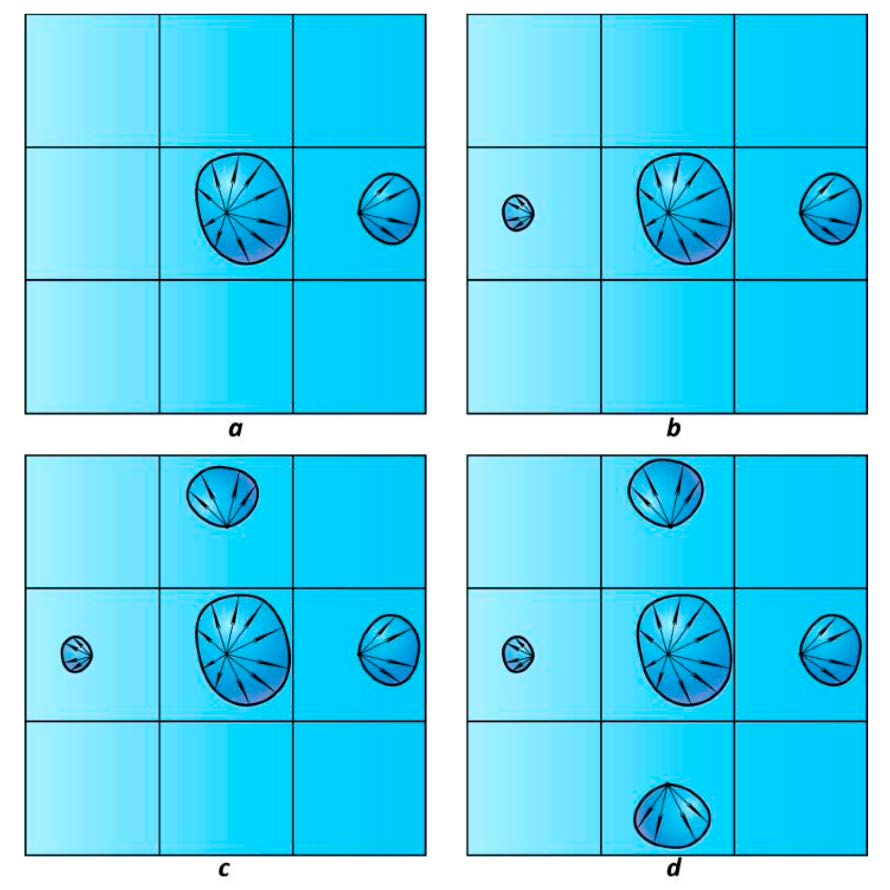
- 迭代4-5次基本达到稳定
在着色点处读取对应体素的Radiance参与渲染
问题：
- 由于粒度不够小（至少比画面分辨率小一个数量级），会传播到物体背面/侧面 -> Light Leaking 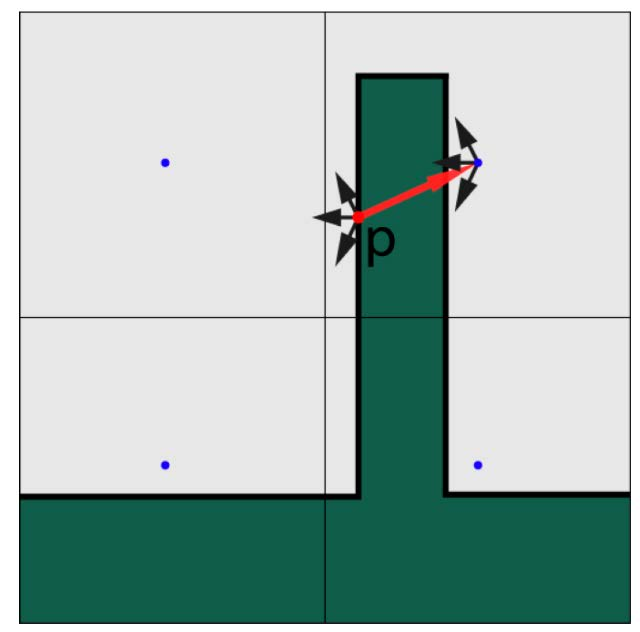
- 同样不考虑Visibility
Cascaded / Multiscale / LoD: 用自适应粒度的网格
Voxel Global Illumination (VXGI)
2 Pass Algorithm Differences with RSM:
- 直接光照对象 / 次级光源 pixel -> (hierarchical) voxels （层级结构的体素，大小层级，建立树结构存储）
- RSM中的采样 -> 对每个Shading Point作圆锥形trace，计算trace到的voxels
Voxelize the scene & Build a hierachy
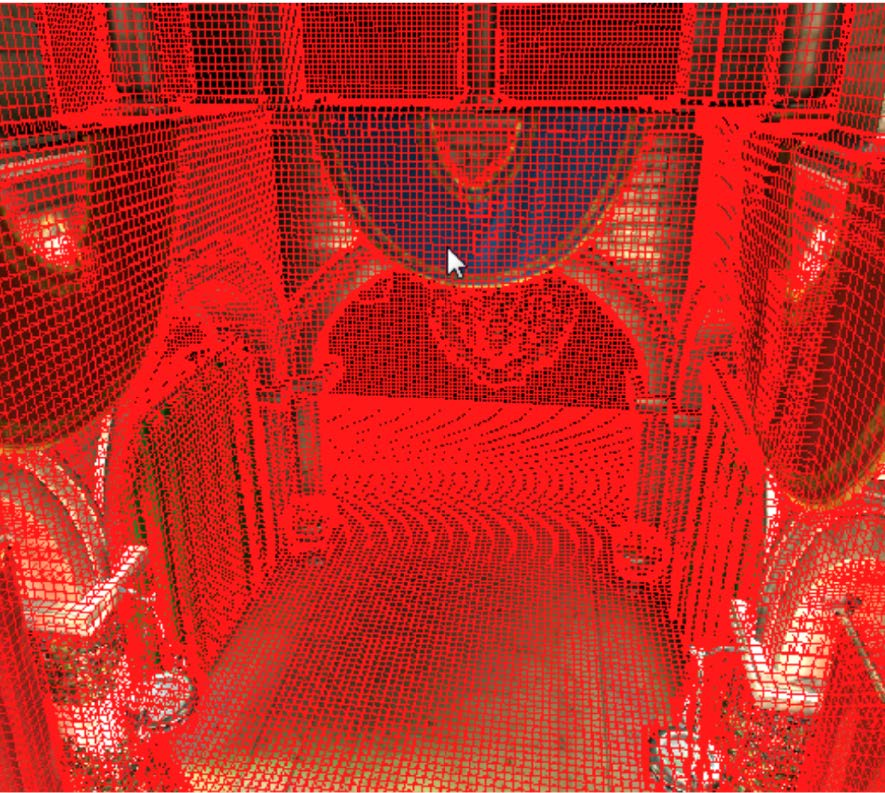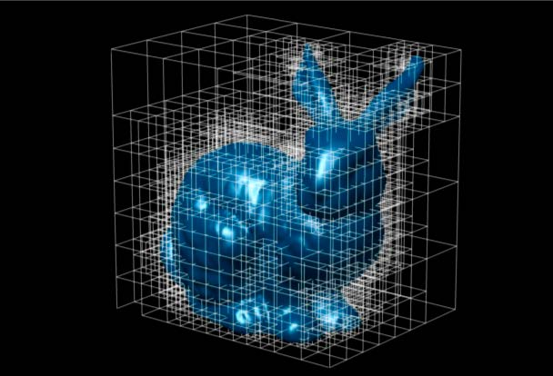
Pass 1 : Light Pass
- 存储光源的入射分布、法线分布，再在trace时计算出射分布（比LPV中视作Diffuse使用SH压缩存储准确，可以支持Glossy材质） 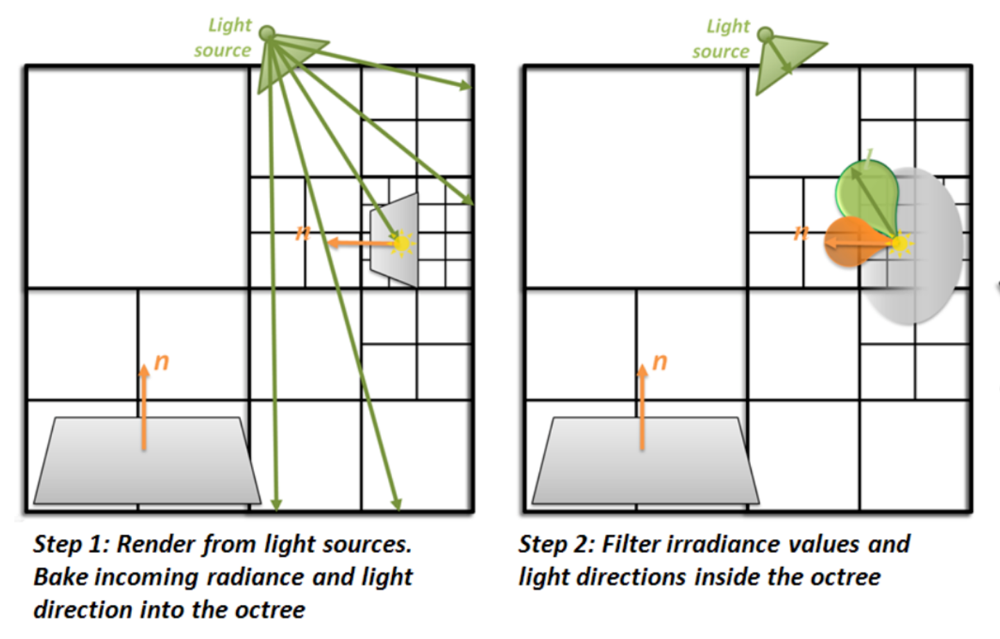
- 在hiearchy中更新
Pass 2 : Camera Pass
对Glossy材质，向反射方向作cone trace
基于cone的大小遍历hierarchy，找到相近大小的块再求和 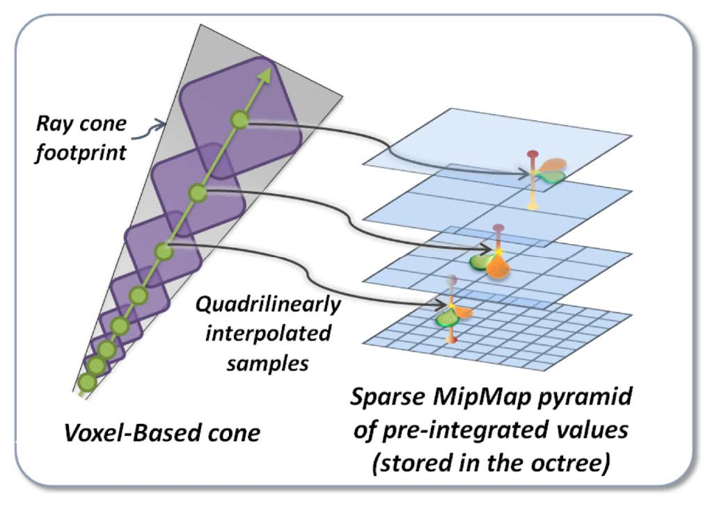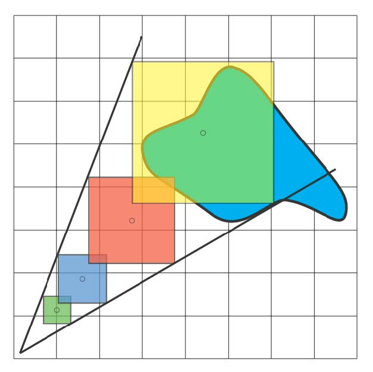
PS：对Diffuse材质，求能覆盖表面的多个cone trace（eg.8个，空隙可忽略） 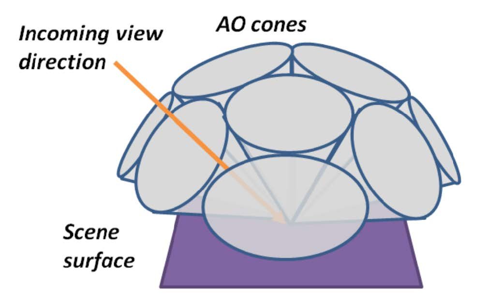
问题：计算量较大、实时体素化开销较大